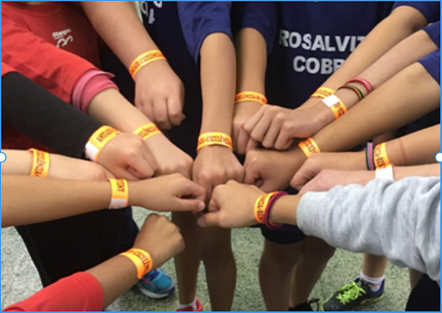
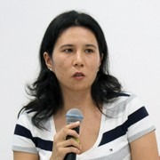

No dia 23 de junho comemora-se o Dia Olímpico, data que marca o aniversário do Comitê Olímpico Internacional, fundado neste dia, em 1894. Costuma-se comemorar o Dia Olímpico com atividades que promovam a filosofia do Olimpismo, filosofia esta que exalta e combina, em equilíbrio, as qualidades do corpo, do espírito e da mente. É importante ressaltar que a filosofia do Olimpismo é utópica e pedra fundamental de uma forma de intervenção social, política e cultural. O Movimento Olímpico, norteado pelas premissas do Olimpismo, aliado aos Jogos Olímpicos (a face pública do Olimpismo) e à Educação Olímpica, tem, resumidamente, o objetivo de colaborar com a criação uma sociedade pacífica (BINDER, 2005).

A Educação Olímpica, com base na experiência prática pedagógica dos membros de Educação Olímpica e nos estudos desenvolvidos pelo Grupo de Estudos Olímpicos da Universidade de São Paulo (GEO-USP), é entendida como uma plataforma pedagógica que mobiliza conceitos objetivos, como a história dos jogos olímpicos, conceitos subjetivos, como os valores olímpicos e, também, promove o desenvolvimento motor. Principalmente, os dois últimos, por meio de vivências esportivas. Sendo assim, o esporte é entendido como o fenômeno humano que promove vivências que buscam mobilizar conhecimentos conceituais, habilidades motoras e habilidades socioemocionais, não de forma isolada e, sim, em um fluxo contínuo e dependente. Especificamente sobre as habilidades socioemocionais, o GEO-USP entende que as vivências esportivas deveriam subverter a lógica olímpica dos dias atuais e oportunizar a discussão, a vivência e a ressignificação dos valores, adjetivados como olímpicos, no entanto, humanos em sua essência (QUINTILIO, 2019). Mas, apesar deste ser um tema extremamente interessante e merecedor de muita discussão, este texto tem como foco compartilhar uma forma de desenvolvimento de um programa de Educação Olímpica. De acordo com Rubio, Leite e Zimmermann (2013), pensar a educação por meio do esporte é transformador e requer reflexão e posicionamento. Para as mesmas autoras, a Educação Olímpica tem potencial para se apropriar do esporte como fenômeno humano e, a partir de todas as suas manifestações, trabalhar diversos temas em situações reais ou que remetam a uma realidade próxima dos alunos.
Na Prefeitura Municipal de São Caetano do Sul, desde 2012, a Educação Olímpica se faz presente, sendo tema de Festas Juninas até Mostras Culturais, integrando projetos interdisciplinares e não apenas na educação física curricular ou no esporte educacional. Os responsáveis pelo desenvolvimento da Educação Olímpica na referida rede de ensino afirmam que este trabalho tem se mostrado potente e, em uma época em que, aparentemente, a sociedade está se distanciando dos valores e da subjetividade, ele coloca o esporte em um lugar mais humano, mais simbólico e de celebração, buscando enxergar os alunos de forma holística (QUINTILIO, 2019). A partir deste olhar, proporcionaram-se atividades como a visita de atletas olímpicos para bate-papos e vivências com os alunos, a produção de mapas conceituais para verificar a aquisição de conceitos relativos ao tema, o registro de situações cotidianas da escola nas quais os valores olímpicos se fizeram presentes, a aproximação da mitologia grega com os valores e até a confecção de pulseiras que acompanharam os alunos nos Jogos Escolares para lembrá-los do que era importante colocar em prática na competição (a amizade, a excelência e o respeito).
Especialmente em 2020, com a migração do ensino presencial para o ensino remoto devido à pandemia do coronavírus, o formato da Educação Olímpica na rede de ensino de São Caetano do Sul precisou ser reinventado para que pudesse continuar chegando aos alunos. Com o apoio da Secretaria de Educação (SCS), do Centro de Capacitação de Profissionais da Educação Zilda Arns (CECAPE – SCS) e do Grupo de Educação Olímpica do GEO-USP, organizou-se um plano de trabalho, inédito, a ser descrito a seguir. Foi proposto, então, um trabalho colaborativo entre professores da rede municipal e integrantes do Grupo de Educação Olímpica do GEO-USP, para o desenvolvimento de seis sequências didáticas, divididas da seguinte forma, para todos os anos do Ensino Fundamental: 1 para os 1º, 2º e 3º anos, 1 para os 4º e 5º anos, 1 para os 6º anos, 1 para os 7º anos, 1 para os 8º anos e 1 para os 9º anos. As sequências didáticas contemplavam 4 aulas, divididas em 2 semanas, para atender à grade curricular municipal. Os professores, voluntariamente, inscreveram-se para fazer parte de um (ou mais) grupo(s) de trabalho, de acordo com a faixa etária, ou tema, de preferência.
O projeto foi batizado de “Olimpismo: educação e integração cultural para o desenvolvimento humano por meio do esporte” e cada sequência didática tinha um tema norteador, o qual deveria ser desenvolvido a partir de objetos de conhecimento e objetivos de aprendizagem descritos no currículo municipal. As sequências didáticas foram criadas pelos professores de educação física da prefeitura de São Caetano do Sul, com a ferramenta do “Google apresentação” e compartilhadas com os membros do Grupo de Educação Olímpica do GEO-USP, os quais eram tutores dessa produção. Também fizeram parte da viabilização do projeto o CECAPE (SCS), assumindo o processo de acompanhamento e revisão das sequências didáticas produzidas, bem como o Centro Digital da cidade (CEDIG – SCS), responsável pelo processo de publicação das mesmas na plataforma “Educação Conectada”. O estudo destas sequências didáticas, por parte dos alunos, ainda está em andamento, devendo finalizar-se em meados de agosto.
Os 1º, 2º e 3º anos ficaram com o tema “Meu corpo olímpico”, por meio do qual os alunos puderam conhecer a origem dos jogos olímpicos, puderam criar um mascote, ouviram o hino olímpico e vivenciaram modalidades olímpicas como o basquete e o judô. Para os 4º e 5º anos o tema foi “A celebração nos jogos olímpicos” por meio do qual os alunos tiveram contato, por exemplo, com o conceito de Olimpismo, com os símbolos e os valores olímpicos, bem como assistiram aos vídeos enviados por um judoca olímpico sobre as celebrações presentes nos jogos e vivenciaram práticas próprias do judô.
No Ensino Fundamental 2, os 6º anos receberam a sequência didática com o tema “Movimento Olímpico” e, a partir dele, aprenderam como os valores olímpicos podem se materializar em uma competição e sobre a medalha Pierre de Coubertin; discutiram, ainda, a transição do amadorismo para o profissionalismo e vivenciaram a luta agachada, a corrida de revezamento e o basquete. Os 7º anos estudaram o tema inspirado em uma das maiores defesas da Professora Katia Rubio, “Atleta: o maior legado olímpico” e, por meio dele, conheceram o atleta da antiguidade e o da era moderna, refletiram sobre a humanidade do atleta, foram apresentados a uma família de arqueiros brasileiros, construíram um arco e flecha e experimentaram a modalidade. Para os 8º anos desenvolveu-se o tema “A participação da mulher no universo olímpico” e, na sequência didática, os alunos refletiram sobre o tema a partir de gráficos e vídeos, por exemplo. Contou-se a história da participação da mulher desde a antiguidade e suas lutas pelo reconhecimento no esporte moderno. E, para o último ano do Ensino Fundamental, os 9º anos discutiram o futuro dos Jogos Olímpicos, tendo como disparador do tema o texto da Professora Katia Rubio “A humanização dos olímpicos”, publicado na Folha de São Paulo, que trata o adiamento/cancelamento dos Jogos de Tóquio para não ferir o princípio da igualdade, estabelecendo-se ponte com a questão do doping. Falou-se, também, das novas modalidades olímpicas e vivenciaram-se práticas corporais compartilhadas por atletas olímpicos em tempos de pandemia.
A transição do ensino presencial para o ensino remoto desafiou alunos, professores, escolas e redes de ensino. E, assim como qualquer desafio olímpico, exigiu o esforço de diversas pessoas para que uma meta pudesse ser alcançada. No entanto, para atingir a meta, a amizade e o respeito se fizeram presentes quando se propôs uma produção colaborativa. Buscou-se a excelência para transformar um conteúdo que é atraente por si só, em algo que tocasse os alunos em sua complexidade. E, assim, fica explícito que, em qualquer atividade, seja o “ser professor” ou o “ser atleta” ou o “ser aluno”, os valores, adjetivados como olímpicos, são frutos das mais variadas mobilizações humanas.
Referências:
BINDER, D. Teaching Olympism in schools: Olympic education as a focus on values education. International Chair in Olympism Lecture, Centre for Olympic Studies (Spain: Autonomous University of Barcelona, 2005), v. 5, n. 16, p. 1-24, 2005.
QUINTILIO, N.K. Das vivências às experiências significativas: os valores olímpicos como mobilizadores das habilidades socioemocionais por meio do esporte educacional. 2019. 174 f. Tese (Doutorado em Ciências) – Universidade de São Paulo, São Paulo, 2019.
RUBIO, K.; LEITE, C. M.; ZIMMERMANN, M. A. Prática docente em educação olímpica: um desafio transversal. Revista brasileira de educação física e esporte, v. 27, p. 53-59, 2013.

Natália Kohatsu Quintilio
Professora de Educação Física e Esporte na Prefeitura de São Caetano do Sul Colaboradora do CECAPE – SCS Mestre e Doutora em Ed. Física – EEFEUSP Membro do Grupo de Estudos Olímpicos USP e da Academia Olímpica Brasileira